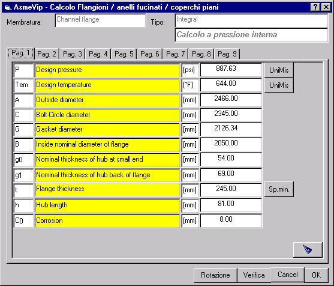

A seguito della pressione del pulsante 'Calcola' compare una finestra come quella qui riportata. L'esempio riguarda una flangia di tipo integrale; qualche differenza sarà possibile a seguito delle impostazioni fornite nella finestra dei dati del 'Grande Fucinato'.

In generale, ciascuna scheda può contenere dei dati di ingresso o dei risultati. I primi sono caratterizzati da una descrizione riportata su sfondo giallo. I secondi, forniti a titolo informativi, hanno una descrizione riportata su sfondo bianco, e non possono essere modificati manualmente.
Per alcune schede vengono fonite informazioni più dettagliate in capitoli appositi.